24-hour skin occlusion patch test Skin irritation index: 0.0,
determined to be a safe product
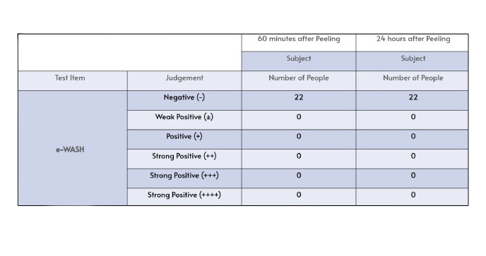
Escherichia coli bactericidal effect test e-WASH sterilizes E. coli in
30 seconds
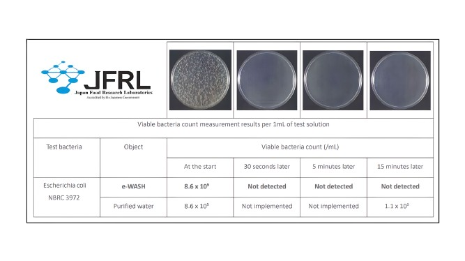
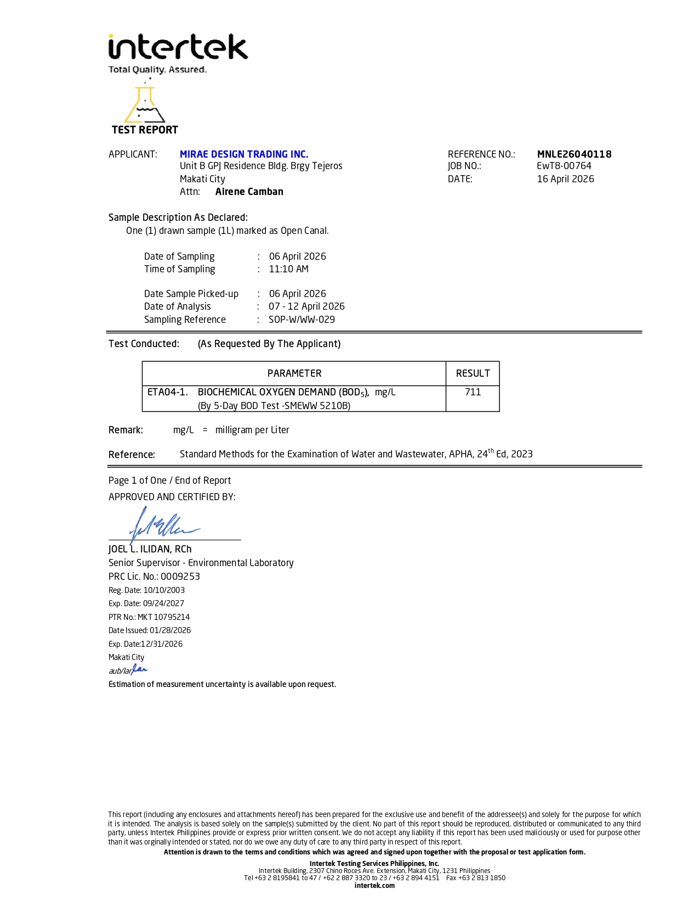
Open Canal Water
The test report indicates that the water sample collected from an open canal shows a
Biochemical Oxygen Demand (BOD5) of 711 mg/L, which is significantly high. This suggests
a heavy presence of organic pollutants in the water, meaning there is a large amount of
oxygen required for microbial decomposition. Such a level typically reflects poor water
quality and indicates that the sample is highly contaminated, making it unsuitable for
direct environmental discharge or use without proper treatment.
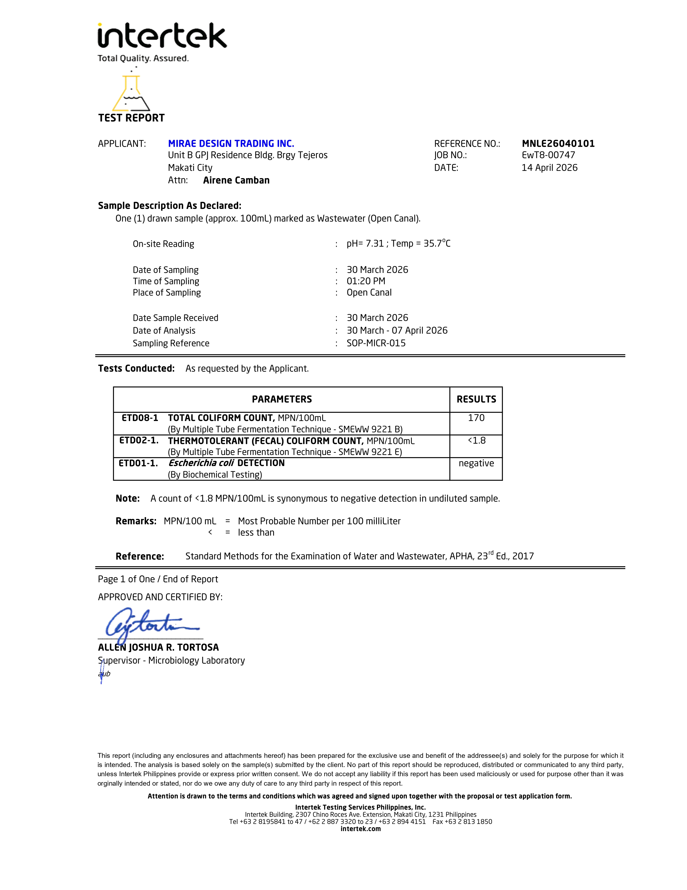
Open Canal Water
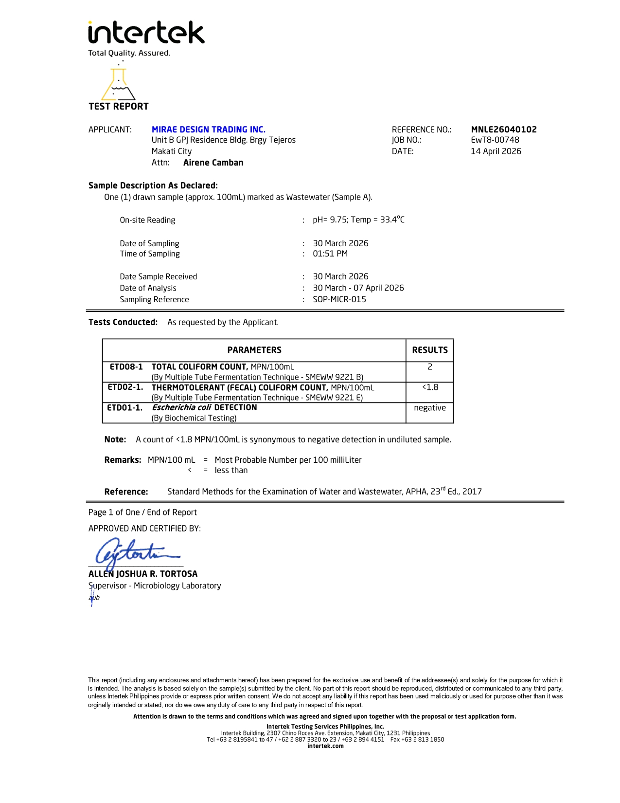
Waste Water A
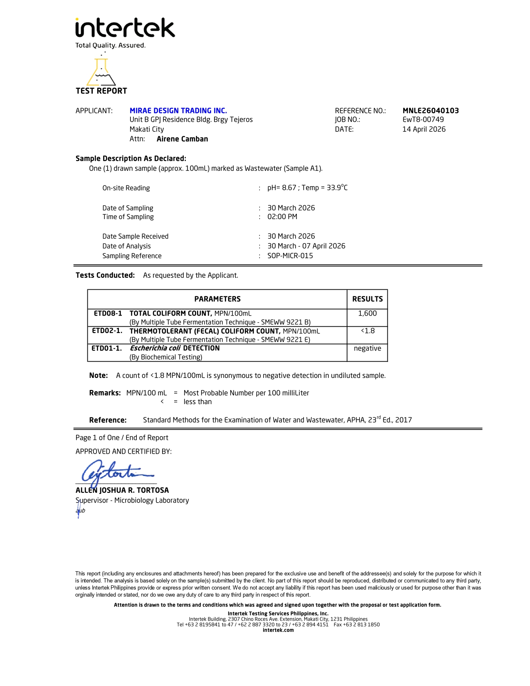
Waste Water A1
Waste Water A
The test report shows that the wastewater sample (Wastewater A) has
a Biochemical Oxygen Demand (BOD₅) of 12 mg/L, indicating a relatively low level of organic pollution.
This suggests that the water contains a smaller amount of biodegradable material and requires less
oxygen for decomposition, reflecting better water quality compared to heavily polluted samples.
Overall, the result implies that the wastewater is within a more acceptable range and may be suitable for discharge,
depending on applicable environmental standards.
Waste Water A Sample
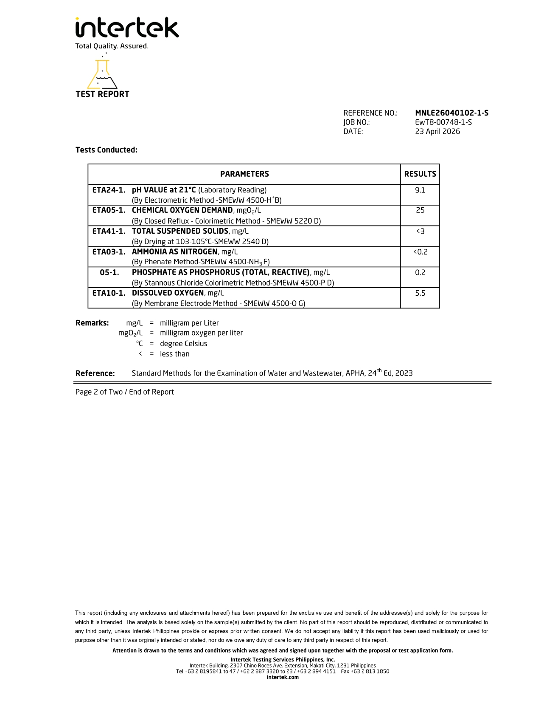
This sample reflects relatively clean and stable water conditions. The low Chemical Oxygen Demand (COD = 25 mg/L)
means there is only a small amount of organic pollution present,
while the Total Suspended Solids (3 mg/L) indicate the water is clear
with very minimal particles. The ammonia (0.2 mg/L) and phosphate (0.2 mg/L)
levels are low, which reduces the risk of nutrient pollution or algal blooms, and the dissolved oxygen
(5.5 mg/L) is sufficient to support aquatic life.
Although the pH of 9.1 is slightly alkaline, it is still generally tolerable,
so overall this water is considered good quality and not heavily polluted.
Waste Water A1
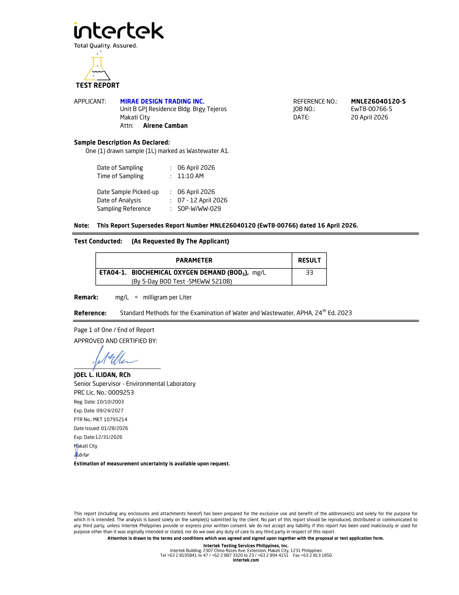
The test result for Wastewater A1 shows a Biochemical Oxygen Demand (BOD₅) of 33 mg/L, indicating a
relatively high level of organic pollution in the sample. This suggests that there is a significant
amount of biodegradable organic matter present, which can consume dissolved oxygen in the water and
potentially harm aquatic life if discharged untreated. Compared to typical clean water standards,
this level reflects the need for proper wastewater treatment before release into the environment.
Waste Water A1 Sample
This sample shows signs of significant pollution and environmental stress. The high COD (66 mg/L)
indicates a large amount of organic matter, which consumes oxygen during decomposition, while the Total
Suspended Solids (28 mg/L) suggest the water is more turbid or dirty. Elevated ammonia (1.7 mg/L)
and phosphate (1.3 mg/L) levels point to nutrient contamination, possibly from wastewater or runoff,
which can trigger algal blooms and further degrade water quality. The most critical issue is the low
dissolved oxygen (1.2 mg/L), which is too low to support most aquatic organisms and may lead to fish kills;
despite the pH of 8.8 being acceptable, the overall condition is poor and likely requires treatment before use or discharge.
MNL Water B
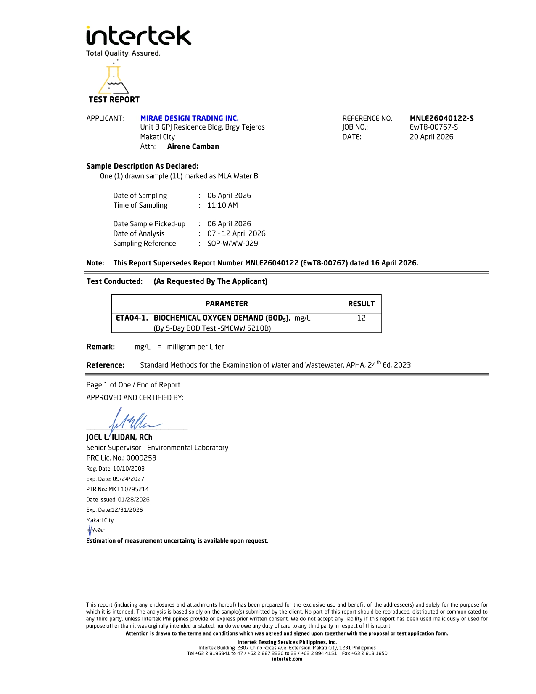
The MLA Water B sample recorded a BOD₅ value of 12 mg/L, which indicates a lower concentration of organic pollutants
compared to the wastewater sample. While this level is considerably cleaner, it still suggests the presence of some
biodegradable material in the water. The result implies moderate water quality, but depending on regulatory standards,
further treatment or monitoring may still be necessary to ensure environmental safety.
MNL Water B Sample
This sample indicates relatively clean water with low contamination levels. The COD (26 mg/L) suggests only a
moderate amount of organic matter, meaning there isn’t heavy pollution consuming oxygen, while the Total Suspended Solids
(4 mg/L) show the water is fairly clear with minimal particles. The ammonia (0.10 mg/L) and phosphate (0.2 mg/L) are very
low, which is a good sign because it means there is little nutrient pollution—reducing the risk of algal blooms or eutrophication.
The dissolved oxygen (4.5 mg/L) is slightly below the ideal level (usually ~5 mg/L or higher for healthy ecosystems),
so while aquatic life can still survive, more sensitive species might be stressed. The pH of 9.1 indicates the water is alkaline. Overall,
the water is acceptable and fairly clean, but with minor concerns on oxygen level and alkalinity that may need observation.
MNL Water B1
The MLA Water B1 sample also shows a BOD₅ result of 12 mg/L, matching the value obtained for MLA Water B.
This consistency suggests similar water conditions and levels of organic content between the two samples.
Although the pollution load is relatively low compared to wastewater, the presence of measurable BOD
indicates that the water is not entirely free of organic
contaminants and should still be assessed for compliance with applicable water quality standards.
MNL Water B1 Sample
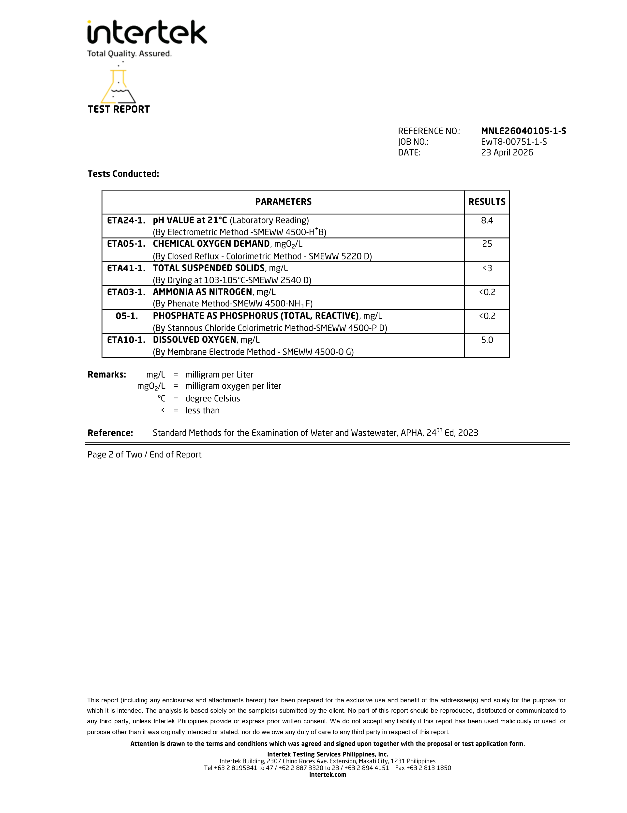
The water sample is slightly alkaline with a pH of 8.4, which falls within the acceptable range for safe water.
Its chemical oxygen demand is low at 25 mg/L, indicating minimal organic pollution. The total suspended solids
are very low at less than 3 mg/L, showing that the water is clear and free of significant particulate matter.
Ammonia and phosphate levels are negligible, both below 0.2 mg/L, suggesting there is no contamination from
sewage or fertilizers and little risk of algal blooms. The dissolved oxygen level is 5.0 mg/L, which is sufficient
to support aquatic life, though higher levels would be more favorable for sensitive species. Altogether, these results
demonstrate that the water is clean, with good clarity, low nutrient content, and adequate oxygenation, making it
suitable for general use and supportive of a healthy aquatic environment.
■
COMPONENT TABLE/ DATA
COMPONENT
CONTENT %
SiO2 (Silicon Dioxide)
73.5%
CaO (Calcium Oxide)
12.1%
Na2O (Sodium Oxide)
10.5%
Al2O3 (Aluminum Oxide)
1.57%
K2O (Potassium Oxide)
0.98%
MgO (Magnesium Oxide)
0.42%
■
CHARACTERISTIC INGREDIENT
Simple Substance
Specific gravity (absolute density)
0.25 to 0.5g/cm³
Particle diameter range
2 to 75mm
Water absorption
Less than 20%
Strength of Unconfined compression
30 to 40kgf/cm²
Heavy metal elution
Not included
■
CHARACTERISTIC INGREDIENT
During Compaction
Density
0.3 to 0.4t/m³
Strength of Triaxial compression
φ=30° More than
CBR Value
17.70%
Coefficient of Water Permeability
3×10-2 to 1×100cm/s
VIRUS STERILIZATION TEST
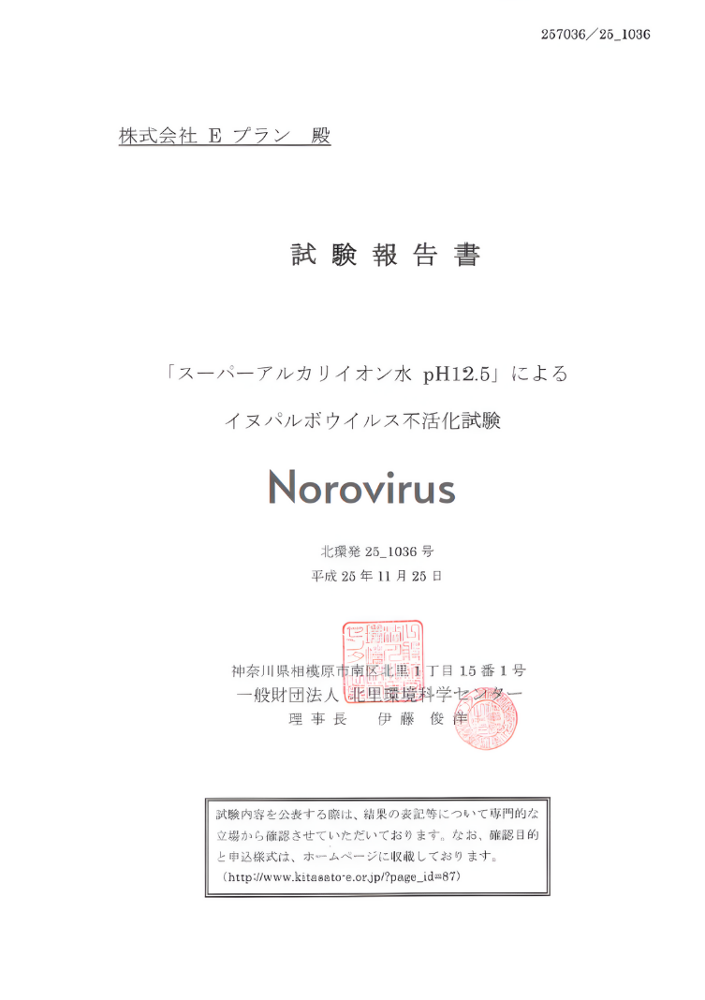
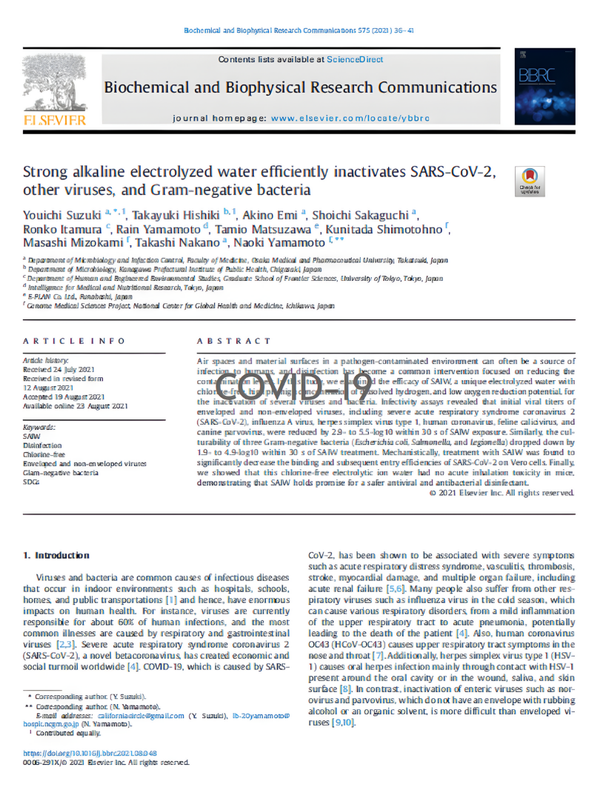
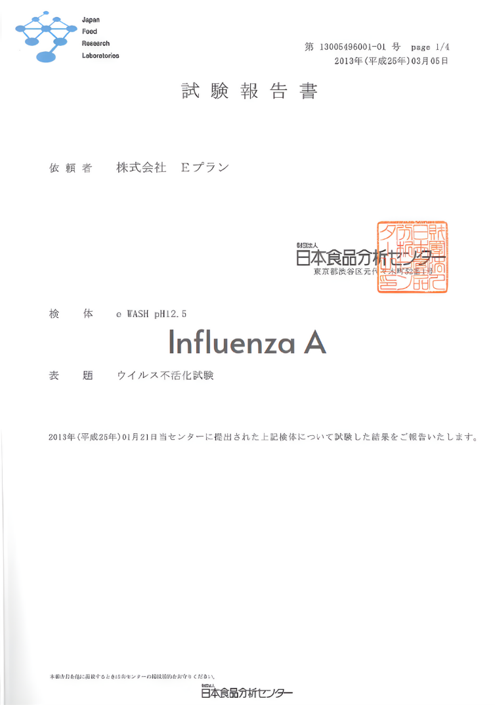
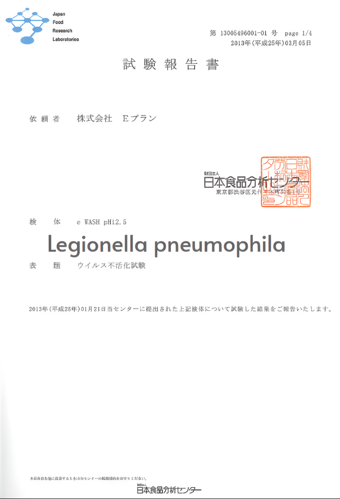
Can sterilize all kinds of viruses and bacteria
Evaluation of avian influenza and airborne virus removal performance,
inactivation tests for E. coli, Salmonella, O157, human herpes virus,
and canine parvovirus. Deodorization, stinging, and many other tests
have been performed.